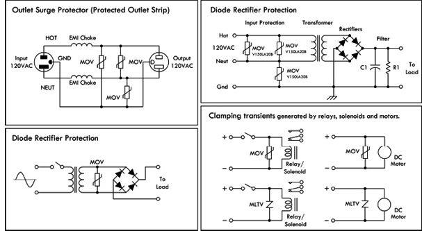
FIGURE 4.133
There are other transient voltage suppression devices out there, such as the Surgector, gas discharge, and spark gap TVSs. The Surgector utilizes silicon thyristor technology to provide bidirectional “crowbar” clamping action for transients of either polarity. This is accomplished with a five-layer p-n junction structure. Surgectors remain in a low-leakage, reverse-bias state, presenting effectively no load to the circuit as long as the applied voltage is at or below its VDRM rating. A transient voltage exceeding this value will cause the device to avalanche (breakdown), beginning the clamping action across the line to which it is connected. As the leading edge of the transient voltage attempts to rise higher, the Surgector current will increase through the circuit’s source impedance until the VBO, or breakover voltage mode, is reached. Thyristor action is then rapidly triggered, and the Surgector switches to its “on,” or latched state. This very low impedance state crowbars the line with effectively the characteristics of a forward p-n junction, thereby short-circuiting the transient voltage.
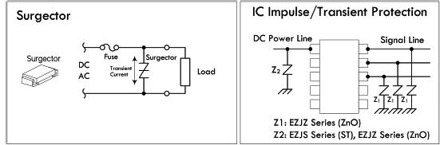
FIGURE 4.134
PolySwitch
A PolySwitch (also known as polyfuse, multiswitch, and generically resettable fuse) is a special positive temperature coefficient resistor that is constructed from a conductive polymer mix. It resembles a varistor and PTC thermistor in one. At normal temperatures, the conductive particles within the polymer form densely packed low-resistance chains, allowing current to flow easily. However, if the current flow through the PolySwitch increases to a point where its temperature rises above a critical level, the crystalline structure of the polymer suddenly changes into an expanded amorphous state. At this point, the device’s resistance dramatically increases, causing a sudden drop in current flow. The point at which this occurs is referred to as the trip current. If the voltage level is maintained after tripping, enough holding current will generally flow, keeping the device in a tripped state. The PolySwitch will reset itself only if the voltage is reduced and the device is allowed to cool, at which point the polymer particles rapidly return to their densely packed state, and the resistance drops.
PolySwitches can be used in numerous applications wherever you need a low-cost, self-resetting solid-state circuit breaker. They are used to limit over-current in speakers, power supplies, battery packs, motors, etc. For example, Fig. 4.135 shows how a PolySwitch used to protect a speaker from excessive current sourced by an amplifier. The PolySwitch is rated with a trip current that is slightly higher than that rated for the power level the speaker can handle. For example, an 8-Ω, 5-W speaker has a maximum current rating determined by the generalized power law.
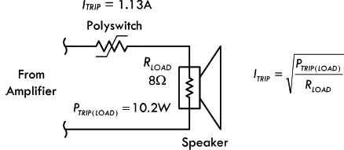
FIGURE 4.135
Avalanche Diodes
Avalanche diodes are designed to break down and conduct at a specified reverse-bias voltage. This behavior is similar to that of a zener diode, but its operation is caused by a different mechanism, called the avalanche effect (a reverse electric field applied across a p-n junction causes a wave of ionization, reminiscent of an avalanche, leading to a large current). However, unlike zener diodes that are rather restricted in maximum breakdown voltage, avalanche diodes are available with breakdown voltage of over 4000 V. Avalanche diodes are used in circuits to guard against damaging high-voltage transients. They are connected to a circuit so that they’re reverse-biased (the cathode is set positive with respect to the anode). In this configuration, the avalanche diode is nonconducting and doesn’t interfere with the circuit. However, if the voltage rises beyond a safe design limit, the diode goes into avalanche breakdown, eliminating the harmful voltage by shunting current to ground. Avalanche diodes are specified with a clamping voltage VBR and a maximum-size transient that it can absorb, specified either in terms of joules of energy or as I2t. The avalanche breakdown event is not destructive, provided the diode isn’t overheated. One side effect that occurs in avalanche diodes is RF noise generation.
4.6 Integrated Circuits
An integrated circuit (IC) is a miniaturized circuit that contains a number of resistors, capacitors, diodes, and transistors stuffed together on a single chip of silicon no bigger than your fingernail. The number of resistors, capacitors, diodes, and transistors within an IC may vary from just a few to millions.
The trick to cramming everything into such a small package is to make all the components out of tiny n-type and p-type silicon structures that are embedded into the silicon chip during the production phase. To connect the little transistors, resistors, capacitors, and diodes together, aluminum plating is applied along the surface of the chip. Figure 4.136 shows a magnified cross-sectional view of an IC showing how the various components are embedded and linked together.
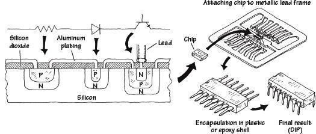
FIGURE 4.136 The structure of an IC
ICs come in analog, digital, or analog/digital form:
• Analog (or linear) ICs produce, amplify, or respond to varying voltages. Some common analog ICs include voltage regulators, operational amplifiers, comparators, timers, and oscillators.
• Digital (or logic) ICs respond to or produce signals having only high and low voltage states. Common digital ICs include logic gates (such as AND, OR, or NOR), microcontrollers, memories, binary counters, shift registers, multiplexers, encoders, and decoders.
• Analog/digital ICs share properties common with both analog and digital ICs. Analog/digital ICs may take a number of different forms. For example, the IC may be designed primarily as an analog timer but may contain a digital counter. Alternatively, the IC may be designed to read in digital information and then use this information to produce a linear output that can be used to drive, say, a stepper motor or LED display.
ICs are so pervasive that you are likely to use them in any project that you will undertake. You will find them used in many of the chapters that follow.
4.6.1 IC Packages
ICs come in many and various packages (see Fig. 4.137). The determining factors for the package type are the number of pins and the power dissipation. For example, a high-power voltage regulator IC may have three pins and look just like a high-power transistor.
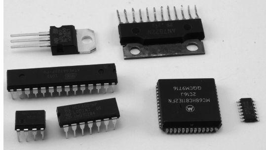
FIGURE 4.137 IC packages
However, the majority of ICs have many more pins and are arranged in a dual in-line (DIL) package (see Fig. 4.137) of 8, 14, 16, 20, 24, or 40 pins. There are also surface-mount versions of the DIL packages, as well as packages arranged as a square with pins on all sides. Some of the surface-mount packages have extremely small spacing between pins—sometimes as small as 0.5 mm, which is two pins every millimeter and not really intended for hand soldering.
Some of the most common packages are listed in Table 4.11.
TABLE 4.11
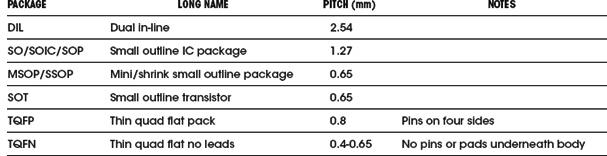
You will often find that the same ICs are available in multiple packages, making it possible to prototype in something easy to solder like DIL or SO, and then switch to a smaller package for the final product.
Optoelectronics
Optoelectrics is a branch of electronics that deals with light-emitting and light-detecting devices. Light-emitting devices, such as lamps and light-emitting diodes (LEDs), create electromagnetic energy (e.g., light) by using an electric current to excite electrons into higher energy levels (when an electron changes energy levels, a photon is emitted). Light-detecting devices such as phototransistors and photoresistors, on the other hand, are designed to take incoming electromagnetic energy and convert it into electric currents and voltages. This is usually accomplished using photons to liberate bound electrons within semiconductor materials. Light-emitting devices typically are used for illumination purposes or as indicator lights. Light-detecting devices are used primarily in light-sensing and communication devices, such as dark-activated switches and remote controls. This chapter examines the following optoelectronic devices: lamps, LEDs, photoresistors, photodiodes, solar cells, phototransistors, photothyristors, and optoisolators.
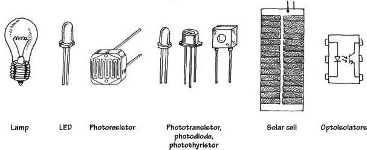
FIGURE 5.1
5.1 A Little Lecture on Photons
Photons are the elemental units of electromagnetic radiation. White light, for example, is composed of a number of different kinds of photons; some are blue photons, some are red photons, etc. It is important to note that there is no such thing as a white photon. Instead, when the combination of the various colored photons interacts with our eye, our brain perceives what we call white light.
Photons are not limited to visible light alone. There are also radiofrequency photons, infrared photons, microwave photons, and other kinds of photons that our eyes cannot detect.
In terms of the physics, photons are very interesting creatures. They have no rest mass, but they do carry momentum (energy). A photon also has a distant wavelike character within its electromagnetic bundle. The wavelength of a photon (horizontal distance between consecutive electrical or magnetic field peaks) depends on the medium in which it travels and on the source that produced it. It is this wavelength that determines the color of a photon. A photon’s frequency is related to its wavelength by λ = ν/f, where ν is the speed of the photon. In free space, ν is equal to the speed of light (c = 3.0 × 108 m/s), but in other media, such as glass, ν becomes smaller than the speed of light. A photon with a large wavelength (or small frequency) is less energetic than a photon with a shorter wavelength (or a higher frequency). The energy of a photon is equal to E = hf, where h is Planck’s constant (6.63 × 10−34 J·s).
The trick to “making” a photon is to accelerate/decelerate a charged particle. For example, an electron that is made to vibrate back and forth within an antenna will produce radiofrequency photons that have very long wavelengths (low energies) when compared with light photons. Visible light, on the other hand, is produced when outer-shell electrons within atoms are forced to make transitions between energy levels, accelerating in the process. Other frequency photons may be created by vibrating or rotating molecules very quickly, while still others, specifically those with very high energy (e.g., gamma rays), can be created by the charge accelerations within the atomic nuclei.
Figure 5.2 shows the breakdown of the electromagnetic spectrum. Radiofrequency photons extend from a few hertz to about 109 Hz (wavelengths from kilometers to about 0.3 m). They are often generated by alternating currents within power lines and electric circuits such as radio and television transmitters.
Microwave photons extend from about 109 up to 3 × 1011 Hz (wavelengths from 30 cm to 1 mm). These photons can penetrate the earth’s atmosphere and hence are used in space vehicle communications, radio astronomy, and transmitting telephone conversations to satellites. They are also used for cooking food. Microwaves are often produced by atomic transitions and by electron and nuclear spins.
Infrared photons extend from about 3 × 1011 to 4 × 1014 Hz. Infrared radiation is created by molecular oscillations and is commonly emitted from incandescent sources such as electric heaters, glowing coals, the sun, human bodies (which radiate photons in the range of 3000 to 10,000 nm), and special types of semiconductor devices.
Light photons comprise a narrow frequency band from about 3.84 × 1014 to about 7.69 × 1014 Hz and are generally produced by a rearrangement of outer electrons in atoms and molecules. For example, in the filament of an incandescent light bulb, electrons are randomly accelerated by applied voltages and undergo frequent collision. These collisions result in a wide range of electron acceleration, and as a result, a broad frequency spectrum (within the light band) results, giving rise to white light.
Ultraviolet photons extend from approximately 8 × 1014 to 3.4 × 1016 Hz and are produced when an electron in an atom makes a long jump down from a highly excited state. The frequency of ultraviolet photons—unfortunately for us—tend to react badly with human cell DNA, which in turn can lead to skin cancer. The sun produces a large output of ultraviolet radiation. Fortunately for us, protective ozone molecules in the upper atmosphere can absorb most of this ultraviolet radiation by converting the photon’s energy into a vibrating motion within the ozone molecule.
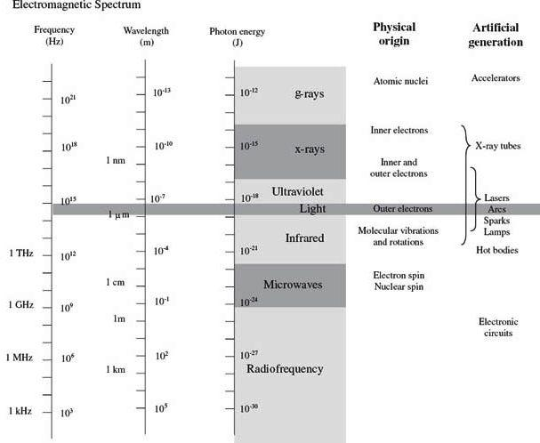
FIGURE 5.2
X-rays are highly energetic photons that extend from about 2.4 × 1016 to 5 × 1019 Hz, making their wavelengths often smaller than the diameter of an atom. One way of producing x-rays is to rapidly decelerate a high-speed charged particle. X-rays tend to act like bullets and can be used in x-ray imagery.
Gamma rays are the most energetic of the photons, whose frequency begins around 5 × 1019 Hz. These photons are produced by particles undergoing transitions within the atomic nuclei. The wavelike properties of gamma rays are extremely difficult to observe.
5.2 Lamps
Lamps are devices that convert electric current into light energy. One approach used in the conversion process is to pass a current through a special kind of wire filament. As current collides with the filament’s atoms, the filament heats up, and photons are emitted. (As it turns out, this process produces a variety of different wavelength photons, so it appears that the emitted light is white in color.) Another approach used to produce light involves placing a pair of electrodes a small distance apart within a glass gas-enclosed bulb. When a voltage is set across the electrodes, the gas ionizes (electrons are stripped from the gas atoms) emitting photons in the process. Here’s an overview of some of the major kinds of lamps.
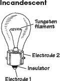
These lamps use a tungsten wire filament to produce a glowing white light when current passes through it. The filament is enclosed in an evacuated glass bulb filled with a gas such as argon, krypton, or nitrogen that helps increase the brilliance of the lamp and also helps prevent the filament from burning out (as would be the case in an oxygen-rich environment). Incandescent lamps are used in flashlights, home lighting, and as indicator lights. They come in a variety of different sizes and shapes, as well as various current, voltage, and candlelight power ratings.
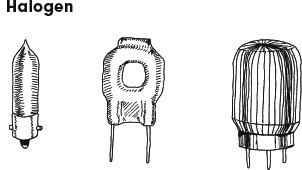
Similar to a typical incandescent lamp, these lamps provide ultrabright output light. Unlike a typical incandescent lamp, the filament is coated on the inside of a quartz bulb. Within this bulb, a halogen gas, such as bromine or iodine, is placed. These lamps are used in projector lamps, automotive headlights, strobe lights, etc.
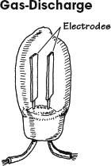
This lamp produces a dim, pale light that results from the ionization of neon gas molecules between two electrodes within the bulb. Types of gas-discharge lamps include neon, xenon flash, and mercury vapor lamps. Gas-discharge lamps have a tendency to suddenly switch on when a particular minimum operating voltage is met. For this reason, they are sometimes used in triggering and voltage-regulation applications. They are also used as indicator lights and for testing home ac power outlets.
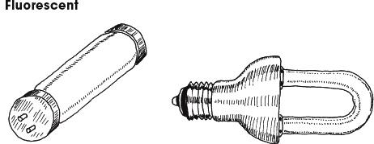
This is a lamp consisting of a mercury vapor–filled glass tube whose inner wall is coated with a material that fluoresces. At either end of the tube are cathode and anode incandescent filaments. When electrons emitted from an incandescent cathode electrode collide with the mercury atoms, ultraviolet (UV) radiation is emitted. The UV radiation then collides with the lamp’s florescent coating, emitting visible light in the process. Such lamps require an auxiliary glow lamp with bimetallic contacts and a choke placed in parallel with the cathode and anode to initiate discharge within the lamp. These are highly efficient lamps that are often used in home lighting applications.
This is a gas-discharge lamp that is filled with a xenon gas that ionizes when a particular voltage is applied across its electrodes. These lamps come with three leads: an anode, a cathode, and a trigger-voltage lead. Normally, a particular voltage is applied across the anode and cathode leads, and the lamp is off. However, when a particular voltage is applied to the trigger lead, the gas suddenly ionizes and releases an extremely bright flash. These lamps are used in photographic applications and in special-effects lighting projects.
FIGURE 5.3
Technical Stuff About Light Bulbs
A lamp’s brightness is measured in what is called the mean spherical candle power (MSCP). Bulb manufacturers place a lamp at the center of an integrating sphere that averages the lamp’s light output over its surface. The actual value of the MSCP for a lamp is a function of color temperature of the emitting surface of the lamp’s filament. For a given temperature, doubling the filament’s surface area doubles the MSCP. Other technical things to consider about lamps include voltage and current ratings, life expectancy, physical geometry of the bulb, and filament type. Figure 5.4 shows a number of different bulb types.
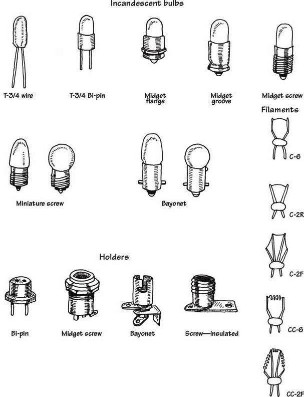
FIGURE 5.4
In recent years, incandescent light bulbs have become something of a rarity. In domestic lighting situations, they have almost completely been replaced by compact fluorescent designs, and indeed are not even for sale in some European countries. There is also a trend toward using arrays of LEDs for illumination in place of incandescent bulbs (see the next section). In applications that formerly would have used incandescent indicator lights, LEDs now rule supreme. LEDs have a much longer life, lower power consumption, and much greater tolerance of physical and thermal shock.
5.3 Light-Emitting Diodes
Light-emitting diodes (LEDs) are two-lead devices that are similar to pn-junction diodes, except that they are designed to emit visible or infrared light. When a LED’s anode lead is made more positive in voltage than its cathode lead (by at least 0.6 to 2.2 V), current flows through the device and light is emitted. However, if the polarities are reversed (anode is made more negative than the cathode), the LED will not conduct, and hence it will not emit light. The symbol for an LED is shown in Fig. 5.5.
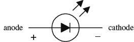
FIGURE 5.5
LEDs are available in a wide range of colors. Historically, red was the first LED color. Yellow and green and infrared LEDs followed. It was not until the 1990s that blue LEDs became available. These days, LEDs are available in pretty much any color, including white.
There are also high-powered LEDs that are used for illumination and organic LEDs (OLEDs) made from polymers that can be built into displays.
Often, LEDs (especially infrared LEDs) are used as transmitting elements in remote-control circuits (e.g., TV remote control). The receiving element in this case may be a phototransistor that responds to changes in LED light output by altering the current flow within the receiving circuit.
5.3.1 How an LED Works
The light-emitting section of an LED is made by joining n-type and p-type semiconductors together to form a pn junction. When this pn junction is forward-biased, electrons in the n side are excited across the pn junction and into the p side, where they combine with holes. As the electrons combine with the holes, photons are emitted. Typically, the pn-junction section of an LED is encased in an epoxy shell that is doped with light-scattering particles to diffuse the light and make the LED appear brighter. Often a reflector placed beneath the semiconductor is used to direct light upward. The cathode and anode leads are made from a heavy-gauge conductor to help wick heat away from the semiconductor.
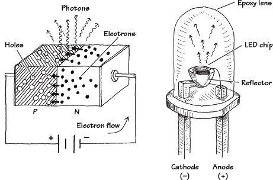
FIGURE 5.6
5.3.2 Kinds of LEDs
These LEDs are inexpensive and durable devices that typically are used as indicator lights. Common colors include green (∼565 nm), yellow (∼585 nm), orange (∼615 nm), and red (∼650 nm). Maximum forward voltages are about 1.8 V, with typical operating currents from 10 to 30 mA.
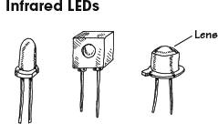
These LEDs are designed to emit infrared photons that have wavelength between approximately 880 and 940 nm. They are used in conjunction with a photosensor (e.g., photodiode, photoresistor, phototransistor) in remote-control circuits (e.g., TV remotes, intrusion alarms). They tend to have a narrower viewing angle when compared with a visible-light LED so that transmitted information can be directed efficiently. Photon output is characterized in terms of output power per specific forward current. Typical outputs range from around 0.50 mW/20 mA to 8.0 mW/50 mA. Maximum forward voltages at specific forward currents range from about 1.60 V at 20 mA to 2.0 V at 100 mA.
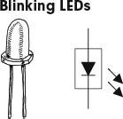
These LEDs contain a miniature integrated circuit within their package that causes the LED to flash from 1 to 6 times each second. They are used primarily as indicator flashers, but may be used as simple oscillators.
Multicolor LEDs mount a number of LEDs in a single package. The color they produce is a mixture of the colors produced by each LED. The ultimate multicolor LED is an RGB LED that has red, green, and blue LEDs within a single package. This allows any color to be mixed by controlling the brightness of each of the LEDs, with white light being produced if all the LEDs are on with equal intensity. The packages usually have a common anode or common cathode connection.
A variation on this has red and green LEDs back to back to indicate polarity (the polarity of the supply voltage will determine which LED is forward-biased and on, and which is reverse-biased and off).
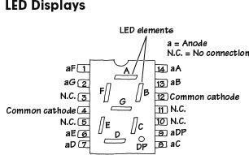
These are used for displaying numbers and other characters. In the LED display shown here, seven individual LEDs are used to make up the display. When a voltage is applied across one of the LEDs, a portion of the 8 lights up. Unlike liquid-crystal displays, LED displays tend to be more rugged, but they also consume more power.
As well as such seven-segment LEDs, LED packages containing LEDs in a matrix are also available.
FIGURE 5.7
5.3.3 More on LEDs
LEDs emit visible light, infrared radiation, or even ultraviolet radiation when forward-biased. Visible single-tone LEDs emit relatively narrow bands of green, yellow, orange, red, and blue light (with spectrum spread usually less than 40 nm at 90 percent peak intensity). Infrared diodes emit one of several bands beyond red. White LEDs provide a variety of wavelengths to mimic white light and are used in low-level lighting applications, such as backlighting, headlamps, and nightlights.
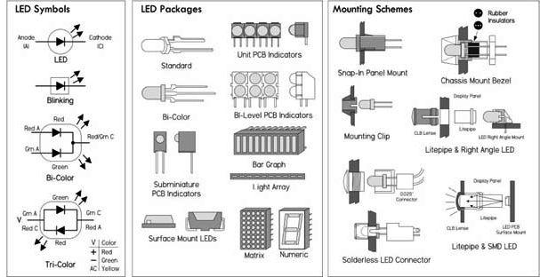
FIGURE 5.8
High-power LEDs (HPLEDs) are now available. These have forward currents of hundreds of mA to more than 1 A. Such LEDs are very bright but also generate a lot of heat. They must be mounted on a heat sink to prevent thermal destruction.
LEDs have very fast response times, excellent efficiency, and long lifetimes. They are current-dependent devices whose light output is directly proportional to the forward current.
To light an LED, apply a voltage greater than the LED’s forward voltage VLED, and limit current flow via a series resistor to a level below the LED’s maximum rating, usually to ILED—the manufacturer’s recommended value. The following equation is used to select the series resistor:
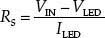
If you want brightness control, throw in a 1-K potentiometer in series, as shown in Fig. 5.10.
FIGURE 5.10 (a) It’s important to keep the LED current flow below the maximum rating. Select a series current-limiting resistor according to the provided formula. A 1K pot can be added to provide variable light-intensity control. (b) Here’s a circuit that can be used to power LEDs from an ac line. The key is the capacitor, which acts to attenuate the ac signal, and the resistor, which acts to limit the current level. Since the capacitor must pass current in both directions, a small diode is connected in parallel with the LED to provide a path for the negative half cycle and also to limit the reverse voltage across the LED. A second LED with polarity reverse may be substituted for the diode, or a tricolor LED could be used, which would appear orange with alternating current. The resistor is chosen to limit the worst-case inrush current to about 150 mA, which will drop to less than 30 mA in a millisecond, as the capacitor charges. The 0.47-μF capacitor has a reactance of 5640 Ω at 60 Hz, so the LED current is about 20 mA half wave, or 10 mA average. A larger capacitor will increase the current and a smaller one will reduce it. The capacitor must be a nonpolarized type with a voltage rating of 200 V or more. (c) This is also an ac-line powered arrangement used to create a nightlight using white LEDs. Like the previous circuit, the 0.47-μF input capacitor attenuates the ac voltage level, and the 180-Ω resistor acts to limit current. The bridge rectifier with attached filter capacitor creates a near constant dc voltage, while the zener diode acts to regulate the voltage level. In this case, there are four white LEDs in series, each with a 3.4-V drop, for a total voltage drop of 13.6 V; therefore, a 15-V zener is used. (d) Do not put LEDs in parallel with each other without using individual dropping resistors for each LED. Although this usually works, it is not reliable. LEDs become more conductive as they warm up, which may lead to unstable current distribution through paralleled LEDs. LEDs in parallel need their own individual dropping resistors, as shown in the figure. Series strings can be paralleled if each string has its own dropping resistors. (e) It’s okay to put LEDs in series with a single common series resistor. Simply add up the voltage drops of all the diodes in series, and use that value in place of VLED in the series-resistor formula. It’s a good idea not to exceed 80 percent of the supply voltage in order to maintain good stability and predicable current consumption. (f) Here, a zener diode is used to create a simple voltage-level indicator: when the voltage exceeds the breakdown voltage of the zener, current flows, lighting the LED. (g) This circuit reverses the polarity at the output using a DPDT switch. D1 goes on when the polarity is one way, and D2 goes on when the polarity is another way. (h) Two LEDs in reverse-parallel make up a simple polarity indicator. Note that both LEDs appear on with ac. (i) Basic circuit showing how to use tricolor LEDs. (j) Blinking LEDs don’t require a series resistor, but don’t apply more than the recommended supply voltage—3 to 9 V is a safe range. A zener placed in reverse parallel with the blinking LED can be used for overvoltage protection. A number of standard LEDs can be made to blink using a blinking LED. You can also use the blinking LED to drive transistors that can be made to switch on and off as the blinking LED flashes.
VLED varies with LED color. Typical VLED values are 1.7 V for non-high-brightness red, 1.9 V for high-brightness high-efficiency low-current red, 2 V for orange and yellow, 2.1 V for green, 3.4 to 3.6 V for bright white and most blue types, and 6 V for 430-nm blue. Given the preceding voltage drops, it’s a good idea to use at least a 3-V supply voltage for lower-voltage LEDs, 4.5 V for 3.4-V types, and 6 V for 430-nm blue. If you don’t know the recommended ILED value of a given LED, it’s usually safe to assume it will be around 20 mA. Table 5.1 shows the range of LED types and corresponding characteristic values.
TABLE 5.1 Diode Characteristics
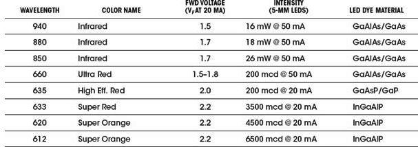
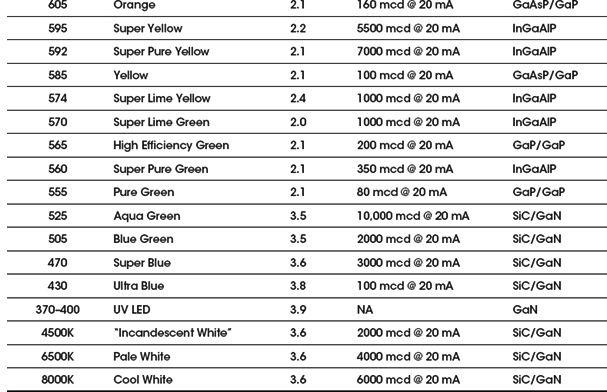
Some other specifications to consider include power dissipation (100 mW typical), reverse voltage rating, operating temperature (-40 to +85°C typical), pulse current (100 mA typical), luminous intensity (given in millicandles, mcd), viewing angle (given in degrees), peak emission wavelength, and spectral width (20 to 40 nm typical).
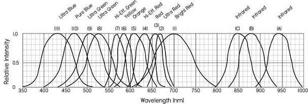
FIGURE 5.9
5.3.4 LED Applications
In Chap. 13, we will look at how you drive LED displays from a microcontroller, including techniques such as multiplexing, Charlieplexing, and driving RGB LEDs with PWM signals to mix colors.
5.3.5 Laser Diodes
Laser diodes are light-emitting diodes with two “mirrors” on the surface of the diode to create a laser cavity. When the diode is forward-biased, charges are injected into the active area of the junction, while electrons and holes recombine in the junction, creating spontaneous emission of photons. These photons can cause other electron-hole pairs to recombine by stimulated emission. When the current is high enough, the device lases. Laser diodes are driven by low-voltage power and usually incorporate optical feedback from a monitor photodiode (commonly built into the same laser diode package) to regulate the laser diode current.
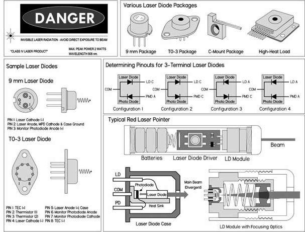
FIGURE 5.11 Figure shows a rough diagram of a laser diode of the type found in a laser pointer or CD player. The size of the package is typically 5 to 10 mm overall, but the laser diode chip is less than 1 mm in length. The maxim beam as it emerges from the laser diode is wedge-shaped and highly divergent (unlike a helium-neon laser) with a typical spread of 10 by 30°. External optics are required to produce anything approaching a parallel (collimated) beam. A simple (spherical) short-focal-length convex lens will work reasonably well for this purpose, but diode laser modules and laser pointers might use a lens that at least on the surface is aspheric (not ground to a spherical shape, as are most common lenses). The beam from the back end of the laser diode chip hits a built-in photodiode that is normally used in an optoelectronic feedback loop to regulate current and thus beam power.
Compared to LEDs, laser diodes have quicker response times and very narrow spectrum spread (around 1 nm), and can focus radiation to a spot as small as 1 μm in diameter—even for a cheap laser diode using simple optics found in a CD player. Unlike gas lasers, however, a laser diode’s output beam is divergent, typically elliptical or wedge-shaped, and astigmatic, requiring refocusing.
The output wavelength of a laser diode is usually fixed to a single mode: for example red (635 nm, 670 nm), infrared (780 nm, 800 nm, 900 nm, 1,550 nm, etc.), and green, blue, violet. However, multimode laser diodes also exist where the emission spectrum consists of several individual spectral lines with a dominant line (line with greatest intensity) occurring at the nominal wavelength of the device. Multimode laser diodes are often desirable because problems with mode hops are suppressed—consequently, they generally have a better signal-to-noise ratio. Mode hops are slight changes in the wavelength caused by thermal expansion of the laser cavity.
Typical optical output for low-powered laser diodes range from around 1 mW to 5 mW, while high-power laser diodes can reach 100 W or more. The highest-power units consist of arrays of laser diodes—not a single device alone.
Laser diodes are used in CD players, CD-ROM drives, and DVD and Blu-ray players. They are also used in laser printers, laser fax machines, laser pointers, sighting and alignment scopes, measurement equipment, high-speed fiber-optic and free-space communication systems; as pump source for other lasers; in bar-code and UPC scanners; and in high-performance imagers. In those applications requiring high-speed modulation or pulse rates (into the gigahertz range), special integrated driver chips are needed to control the laser diode drive current (more on that in a bit).
A variety of small laser diodes are found in CD players, CD-ROM drives, laser printers, and bar-code scanners. The most common laser diodes around are those used in CD players and CD-ROM drives. These produce a mostly invisible beam in the near infrared spectrum at 780 nm. The optical output from the actual laser diode itself may be up to 5 mW, but once it passes through the optics leading to the CD, the power drops to 0.3 to 1 mW. Higher-power IR laser diodes found in read-write drives have more power output—up to 30 mW or so. Even higher-power blue laser diodes can be found in Blu-ray players.
Visible laser diodes have replaced the helium-neon lasers used in bar-code scanners, laser pointers, positioning devices in medicine (e.g., CT and MRI scanners), and many other applications. The first visible-light laser diode emitted with a wavelength around 670 nm in the deep red spectrum. More recently, 650-and 635-nm red laser diodes have dropped in price. 635 to 650-nm laser diodes are used in DVD technology. The shorter wavelength compared to 780 nm is one of the several improvements that enable DVDs to store about eight times the amount of information as CDs (4 to 5 GB per layer and up to two layers on each side of the disc, as compared to a typical CD that stores only around 650 MB). Like the IR laser diodes, the visible laser diodes have a typical maximum power around 3 to 5 mW, and cost about $10 to $50 for the basic laser diode device—more with optics and drive electronics. Higher-power types are also available but can cost upward of several hundred dollars for something like a 20-mW module. Very high-power diode lasers using arrays of laser diodes or laser diode bars with power output of watts or greater may cost thousands of dollars.
It’s important to note that you should never look into a laser beam or any secular reflection of the laser beam—“you might poke your eye out.” Also, laser diodes are extremely sensitive to electrostatic discharge (ESD), so it’s important to use grounding straps and grounded equipment when working with them, as well as following manufacturer’s suggested handling precautions.
Laser Diode Drive Circuits
You should never drive a laser diode without the proper drive circuitry. Without the proper drive circuitry, you can run into all sorts of problems stemming from swings in operating temperature with unstable injection current. The results can lead to a fried laser diode, or one whose life is short. For this reason, it’s important to have a driver circuit that can provide stable current without the possibility of supply transients screwing things up. Two basic techniques used to achieve stable optical output from a laser diode are described here.
Automatic current control (ACC) or constant current circuit: This involves driving the laser diode without a photodiode feedback loop; the laser diode is simply driven at constant current. This is a simple method to use, but the optical output will fluctuate as the laser diode temperature changes. However, there are circuits and corresponding laser diodes that are designed to control the diode’s operating temperature (without using the photodiode) that are very popular. The constant current circuit with temperature control provides faster control loop and precision current reference for accurately monitoring laser current. In addition, in many cases, the laser diode’s internal photodiode may exhibit drift and have a poor noise characteristic. If performance of the internal photodiode is inferior, the laser diode’s optical output is liable to be noisy and unstable. Constant current operation without temperature control, however, is generally not a good idea, except in cheap, low-power situations (cheap laser pointers, etc.). If the operating temperature of the laser diode decreases significantly, the optical power output will increase, and this could easily exceed its maximum rating.
Automatic power control (APC) circuit: This drive circuit is based on a photodiode feedback loop that monitors the optical output and provides a control signal for the laser diode to maintain a constant optical output level. Constant power control prevents the possibility of the optical power output increasing as the laser diode’s temperature decreases. However, when operating in the constant power mode and without temperature control, mode hops and changes in wavelength will still occur. Also, if the diode’s heat sink is inadequate and the temperature is allowed to rise, the optical power will decrease. In turn, the drive circuit will increase the injection current, attempting to maintain the optical power at a constant level. Without an absolute current limit, thermal runaway is possible and the laser may be damaged or destroyed in the process.
Regardless of the type of drive circuit used, the key is to prevent the drive current from overshooting the maximum operating level. Exceeding the maximum optical output, even for a nanosecond, will damage the mirror coatings on the laser diode end facets. Your typical laboratory power supply should not be used to directly drive a laser diode—it simply doesn’t provide enough protection. Typical drive circuits incorporate slow-start circuitry, capacitive filtering, and other provisions to eliminate supply spikes, surges, and other switching transients.
Figure 5.12 shows a few do-it-yourself laser diode supplies. Though these drive circuits will work with many low-powered laser diodes that don’t require modulation, it’s worth your while to check out the laser data manufacturer’s data sheets for recommended drive circuits. Creating your own drive circuits can be very tricky, and you’ll probably end up frying a few expensive laser diodes in the process. Of course, you can also buy a laser diode drive chip, which may be the best bet if you’re doing something a bit more complex than creating a laser pointer. These drive chips may support high-bit-rate modulation in addition to providing the constant current needed for optically stable power. Other types of chips can be adapted to linear and switching regulators. Some companies worth checking out include MAXIM, Linear Technology, Sharp, Toshiba, Mitsubishi, Analog Devices, and Burr-Brown. Often, these manufacturers provide free samples.
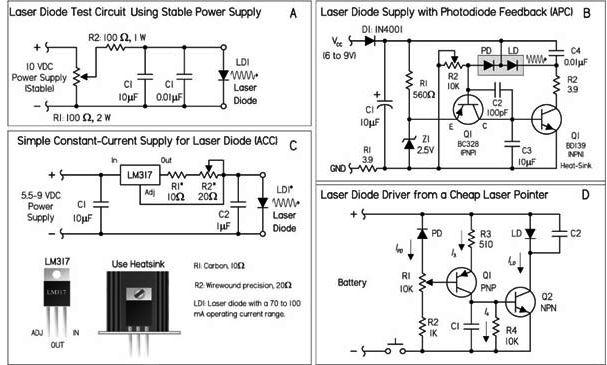
FIGURE 5.12 (a) This circuit can be used to identify the proper connections and polarity and then to drive the laser diode for testing purposes. Here a 0- to 10-VDC supply with current-limiting resistor is in series with the diode. If your power supply has a current limiter, set it at 20 to 25 mA to start. You can always increase it later. R2 limits the maximum current. If you know the specs for your diode, this is a good idea (and to protect your power supply, too). You can always reduce its value if your laser diode requires more than about 85 mA (with R2 = 100 Ω). (b) This runs on a (wall adapter) power supply from 6 to 9 V. There is heavy capacitive filtering in this circuit. Changes would be needed to enable this circuit to be modulated at any reasonable rate. Note that C4 is estimated; also, an LM341 shunt regulator set up as a 2.5-V reference could replace the 2.5-V zener. (c) The resistor value depends on your specific laser diode current requirements. Power is provided by a 5.5- to 9-VDC battery. For the resistor, a small 10-Ω carbon resistor in series with a precision 20-Ω adjustable resistor can be used. It’s a good idea to place three ordinary diodes in series instead of a laser diode, then measure the current through them and adjust the resistor until the necessary current level is reached, in this case 50 to 60 mA. You can turn up the current, never exceeding your diode’s maximum limit. The dim glow will increase in intensity, but at some point a distinctive step in intensity is reached. (d) This circuit is from an inexpensive laser pointer. It includes some capacitive filtering, as well as a power-adjust pot R1. Unlike the previous circuit, this one doesn’t have any absolute reference, so power output will be dependent on the battery voltage to some extent. It’s possible to modulate this module at a reasonable frequency by removing or greatly reducing the value of the filter capacitor C1.
DRIVE CIRCUIT PRECAUTIONS
Even with a suitable drive circuit, watch out for intermittent or unreliable connections between the laser diode and the drive circuit. An intermittent contact in the photodiode feedback circuit will usually destroy a laser diode. Even if a power-control potentiometer’s wiper breaks contact with the resistive element, there can be problems. Also, never use a switch or relay to make or break the connection between the drive circuit and the laser diode. The following are some other laser diode precautions:
Power measurement: It’s not safe to assume that the optical power output of a laser diode will match what’s stated in the manufacturer’s minimum-maximum data—each diode will have a unique operating characteristic as a result of manufacturing tolerances. For accuracy, you must measure the output with an optical power meter or a calibrated photodiode. Remember, once the laser diode is past the threshold point, stimulated emission is achieved and the optical output increases significantly for a small increase in forward current. Therefore, a very slight increase in drive current may cause the optical output to exceed the absolute maximum. Also, make sure to include optical losses through any lenses or other components when making measurements and calculations.
Operating temperature and heat sinks: In most applications, laser diodes require heat sinks, especially when operating continuously. Without a heat sink, the laser diode junction temperature will quickly increase, causing optical output to degrade. If the laser diode temperature continues to rise, exceeding the maximum operating temperature, the diode can be catastrophically damaged or the long-term performance may degrade significantly. Generally, a lower operating temperature will help extend the diode’s lifetime. Visible laser diodes with lower wavelengths (e.g., ∼635 nm) are typically more sensitive to temperature than the IR laser diodes. Often, thermoelectric cooling is required to keep temperatures down. When using heat sinks, a small amount of non-silicone-type heat sink compound improves thermal conductivity between laser diode and heat sink.
Windows: Keep laser diode windows and other opticals in the path clean. Dust or fingerprints will cause diffraction or interference in the laser output that can result in lower output or anomalies in the far-field pattern. The window should be cleaned using a cotton swab and ethanol.
The Easy Way Out: Laser Diode Modules and Laser Pointers
If all you really want is a visible laser to shoot around, a commercial diode laser module or some brands of laser pointers (those that include optical feedback based on laser power regulation) may be the ticket. Both the modules and laser pointers include a driver circuit capable of operating reliably on unregulated low-voltage dc input and a collimating lens matched to the laser diode. Many of the modules will permit fine adjustment of the lens position to optimize the collimation or permit focusing to a point at a particular distance. However, neither the module nor the pointer is designed to be modulated at any more than a few hertz, due to heavy internal filtering designed to protect the laser diode from power spikes. Therefore, they are generally not suited for laser communication applications. In general, it’s a whole lot easier starting out with the module or pointer rather than a laser diode and homemade power supply, or even a commercial driver, if it isn’t explicitly designed for your particular laser diode. There is no way to know how reliable or robust an inexpensive laser pointer will be, or if the beam quality will be acceptable. Diode laser modules are generally more expensive and of higher quality than the pointers, so they may be better for serious applications. Also, consider a helium-neon laser, since even the cheapest type is likely to generate a beam with better beam quality than the typical diode laser module or laser pointer.
Laser Diode Specifications
Lasing wavelength, λp: The wavelength of light emitted by the laser diode. For a single-mode device, this is the wavelength of the single spectral line of the laser output. For a multimode device, this is the wavelength of the spectral line with the greatest intensity.
Threshold current, Ith: The boundary between spontaneous emission and the stimulated emission shown on the optical power output versus forward current curve. Below the threshold current point, the output resembles the incoherent output from an LED; at or above the specified threshold current, the device begins to produce laser output. Once past the threshold point, stimulated emission is achieved and the optical output increases significantly for small increases in forward current.
Operating current, Iop: The amount of forward current through the laser diode necessary to produce the specified typical optical output at a specified operating temperature.
Operating voltage, Vop: The forward voltage across the laser diode when the device produces its specified typical optical output at a specified operating temperature.
Optical power output, PO: Maximum allowable instantaneous optical power output in either continuous or pulse operation.
Operating temperature range: Range of case temperatures within which the device may be safely operated.
Monitor current, Im: The current through the photodiode, at a specified reverse-bias voltage, when the laser diode is producing its typical optical power output.
Photodiode dark current, ID(PD): The current through the reverse-biased internal monitor photodiode when the laser is not emitting.
Reverse voltage, VR: Maximum allowable voltage when reverse bias is applied to the laser diode or photodiode. For laser diodes with an internal monitor photodiode, the reverse voltage is specified for the laser diode as VL(LD) and for the photodiode as VR(PD).
Aspect ratio, AR: The ratio of the laser diode’s divergence angles, θ⊥ (perpendicular) and θ || (parallel). A diode with a 30° perpendicular divergence and a 10° parallel divergence has an elliptical beam with an aspect ratio of 3:1.
Astigmatism, As or Das: The laser beam appears to have different source points for the directions perpendicular and parallel to the junction plane. The astigmatic distance is defined as the distance between the two apparent sources. A laser diode with a large amount of astigmatism must have the astigmatism corrected (or reduced) if the laser diode output is to be accurately focused—otherwise, the resulting focused beam will be astigmatic.
Beam divergence, θ⊥ and θ||: Also referred to as radiation angles. The beam divergence is measured as the full angle and at the half-maximum intensity point, known as full-width half-maximum, or FWHM. Angular specifications are provided for both the perpendicular axis and the parallel axis.
Polarization ratio: The output from a single-cavity laser diode is linearly polarized parallel to the laser junction. Spontaneous emission with a random polarization and/or with a polarization perpendicular to the laser junction is also present. The polarization ratio is defined as the parallel component divided by the perpendicular component. For a diode operating near its maximum power, the ratio is typically greater than 100:1. When operating near the threshold point, the ratio would be considerably lower as the spontaneous emission becomes more significant.
Slope efficiency, SE: Also referred to as differential efficiency. This is the mean value of the incremental change in optical power for an incremental change in forward current when the device is operating in the lasing region of the optical power output versus forward current curve.
Rise time: Time required for the optical output to rise from 10 percent to 90 percent of its maximum value.
Positional accuracy (Dx, Dy, Dx): Also referred to as emission point accuracy. These specifications define the positional accuracy of the laser diode emitter with respect to the device package. Dx and Dy are measured as the planar displacement of the chip from the physical axis of the package. Dz is measured perpendicular to the reference surface. Specifications may list both angular error expressed in degrees and the linear error in microns.
5.4 Photoresistors
Photoresistors are light-controlled variable resistors. These are also known as light-dependent resistors (LDRs). In terms of operation, a photoresistor is usually very resistive (in the megaohms) when placed in the dark. However, when it is illuminated, its resistance decreases significantly; it may drop as low as a few hundred ohms, depending on the light intensity. In terms of applications, photoresistors are used in light- and dark-activated switching circuits and in light-sensitive detector circuits. Figure 5.13 shows the symbol for a photoresistor.
FIGURE 5.13
5.4.1 How a Photoresistor Works
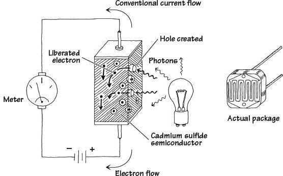
Photoresistors are made from a special kind of semiconductor crystal, such as cadmium sulfide (for light) or lead sulfide (for infrared). When this semiconductor is placed in the dark, electrons within its structure do not want to flow through the resistor because they are too strongly bound to the crystal’s atoms. However, when illuminated, incoming photons of light collide with the bound electrons, stripping them from the binding atom, thus creating a hole in the process. These liberated electrons can now contribute to the current flowing through the device (the resistance goes down).
FIGURE 5.14
Photoresistors may require a few milliseconds or more to fully respond to changes in light intensity and may require a few seconds to return to their normal dark resistance once light is removed. In general, photoresistors pretty much all function in a similar manner. However, the sensitivity and resistance range of a photoresistor may vary greatly from one device to the next. Also, certain photoresistor may respond better to light that contains photons within a particular wavelength of the spectrum. For example, cadmium sulfide photoresistors respond best to light within the 400- to 800-nm range, whereas lead sulfide photoresistors respond best to infrared photons.
5.4.3 Applications
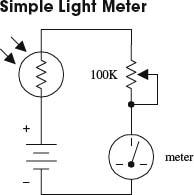
Here, a photoresistor acts as the light-sensing element in a simple light meter. When dark, the photoresistor is very resistive, and little current flows through the series loop; the meter is at its lowest deflection level. When an increasingly bright light source is shone on the photoresistor, the photoresistor’s resistance begins to decrease, and more current begins to flow through the series loop; the meter starts to deflect. The potentiometer is used to adjust the sensitivity of the meter.
These circuits resemble the voltage-divider circuit described in Chap. 3. As before, the output voltage is given by
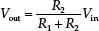
As the intensity of light increases, the resistance of the photoresistor decreases, so Vout in the top circuit gets smaller as more light hits it, whereas Vout in the lower circuit gets larger.
A voltage divider like this is usually used when using the photoresistor with a microcontroller.
The two circuits shown here make use of light-sensitive voltage dividers to trip a relay whenever the light intensity changes. In the light-activated circuit, when light comes in contact with the photoresistor, the photoresistor’s resistance decreases, causing an increase in the transistor’s base current and voltage. If the base current and voltage are large enough, the transistor will allow enough current to pass from collector to emitter, triggering the relay. The dark-activated relay works in a similar but opposite manner. The value of R1 in the light-activated circuit should be around 1 kΩ but may need some adjusting. R1 in the dark-activated circuit (100 kΩ) also may need adjusting. A 6- to 9-V relay with a 500-Ω coil can be used in either circuit.
FIGURE 5.15
5.5 Photodiodes
Photodiodes are two-lead devices that convert light energy (photon energy) directly into electric current. If the anode and cathode leads of a photodiode are joined together by a wire and then the photodiode is placed in the dark, no current will flow through the wire. However, when the photodiode is illuminated, it suddenly becomes a small current source that pumps current from the cathode through the wire and into the anode. Figure 5.16 depicts the symbol for a photo diode.
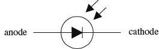
FIGURE 5.16
Photodiodes are used most commonly to detect fast pulses of near-infrared light used in wireless communications. They are often found in light-meter circuits (e.g., camera light meters, intrusion alarms, etc.) because they have very linear light/current responses.
5.5.1 How a Photodiode Works
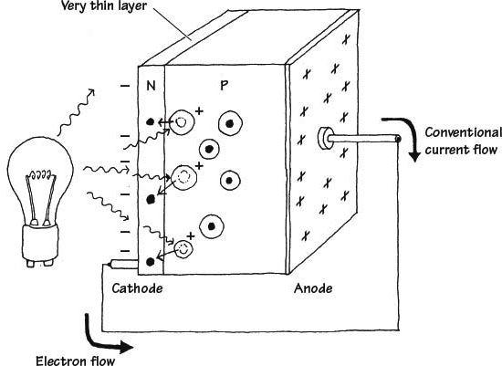
FIGURE 5.17
A photodiode is built by sandwiching a very thin n-type semiconductor together with a thicker p-type semiconductor. (The n side has an abundance of electrons; the p side has an abundance of holes.) The n side of the combination is considered the cathode, while the p side is considered the anode. Now, if you shine light on this device, a number of photons will pass through the n-semiconductor and into the p-semiconductor. Some of the photons that make it into the p side will then collide with bound electrons within the p-semiconductor, ejecting them and creating holes in the process. If these collisions are close enough to the pn interface, the ejected electrons will then cross the junction. What you get in the end is extra electrons on the n side and extra holes on the p side. This segregation of positive and negative charges leads to a potential difference being formed across the p-n junction. Now if you connect a wire from the cathode (n side) to the anode (p side), electrons will flow through the wire, from the electron-abundant cathode end to the hole-abundant anode end (or if you like, a conventional positive current will flow from the anode to cathode). A commercial photodiode typically places the p-n semiconductor in a plastic or metal case that contains a window. The window may contain a magnifying lens and a filter.
5.5.2 Basic Operations
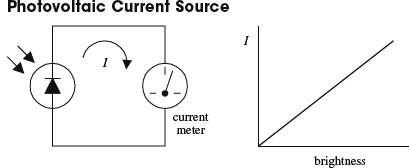
Here, a photodiode acts to convert light energy directly into electric current that can be measured with a meter. The input intensity of light (brightness) and the output current are nearly linear.
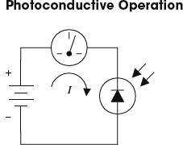
Individual photodiodes may not produce enough current needed to drive a particular light-sensitive circuit. Usually they are incorporated along with a voltage source. Here, a photodiode is connected in reversed-biased direction with a battery. When dark, a small current called the dark current (within the nA range) flows through the photodiode. When the photodiode is illuminated, a larger current flows. This circuit, unlike the preceding circuit, uses the battery for increased output current. A resistor placed in series with the diode and battery can be used to calibrate the meter. Note that if you treat the photodiode as if it were an ordinary diode, conduction will not occur; it must be pointed in the opposite direction.
FIGURE 5.18
5.5.3 Kinds of Photodiodes
Photodiodes come in all shapes and sizes. Some come with built-in lenses, some come with optical filters, some are designed for high-speed responses, some have large surface areas for high sensitivity, and some have small surface areas. When the surface area of a photodiode increases, the response time tends to slow down. Table 5.2 presents a sample portion of a specifications table for a photodiode.
TABLE 5.2 Part of a Specifications Table for a Photodiode
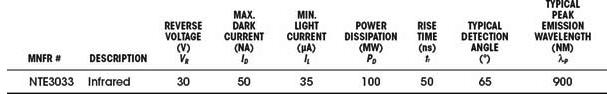
FIGURE 5.19
5.6 Solar Cells
Solar cells are photodiodes with very large surface areas. The large surface area of a solar cell makes the device more sensitive to incoming light, as well as more powerful (larger currents and voltages) than photodiodes. For example, a single silicon solar cell may be capable of producing a 0.5-V potential that can supply up to 0.1 A when exposed to bright light.
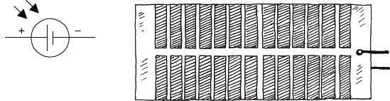
FIGURE 5.20
Solar cells can be used to power small devices such as solar-powered calculators or can be added in series to recharge nickel cadmium batteries. Often solar cells are used as light-sensitive elements in detectors of visible and near-infrared light (e.g., light meters, light-sensitive triggering mechanism for relays). Like photodiodes, solar cells have a positive and negative lead that must be connected to the more positive and more negative voltage regions within a circuit. The typical response time for a solar cell is around 20 ms.
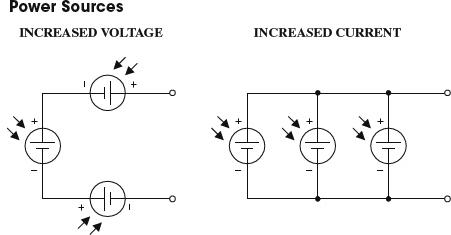
Like batteries, solar cells can be combined in series or parallel configurations. Each solar cell produces an open-circuit voltage from around 0.45 to 0.5 V and may generate as much as 0.1 A in bright light. By adding cells in series, the output voltage becomes the sum of the individual cell voltages. When cells are placed in parallel, the output current increases.
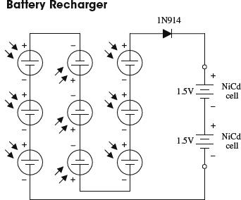
The circuit here shows how nine solar cells placed in series can be used to recharge two 1.5-V NiCd cells. (Each cell provides 0.5 V, so the total voltage is 4.5 V minus a 0.6-V drop due to the diode.) The diode is added to the circuit to prevent the NiCd cells from discharging through the solar cell during times of darkness. It is important not to exceed the safe charging rate of NiCd cells. To slow the charge rate, a resistor placed in series with the batteries can be added.
FIGURE 5.21
5.7 Phototransistors
Phototransistors are light-sensitive transistors. A common type of phototransistor resembles a bipolar transistor with its base lead removed and replaced with a light-sensitive surface area. When this surface area is kept dark, the device is off (practically no current flows through the collector-to-emitter region). However, when the light-sensitive region is exposed to light, a small base current is generated that controls a much larger collector-to-emitter current. Field-effect phototransistors (photoFETs) are light-sensitive field-effect transistors. Unlike photobipolar transistors, photoFETs use light to generate a gate voltage that is used to control a drain-source current. PhotoFETs are extremely sensitive to variations in light but are more fragile (electrically speaking) than bipolar phototransistors.
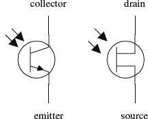
FIGURE 5.22
5.7.1 How a Phototransistor Works
Figure 5.23 shows a simple model of a two-lead bipolar phototransistor. The details of how this device works are given below.
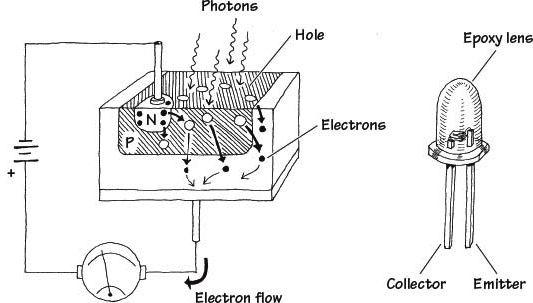
FIGURE 5.23
The bipolar phototransistor resembles a bipolar transistor (with no base lead) that has an extra large p-type semiconductor region that is open for light exposure. When photons from a light source collide with electrons within the p-type semiconductor, they gain enough energy to jump across the pn-junction energy barrier—provided the photons are of the right frequency/energy. As electrons jump from the p region into the lower n region, holes are created in the p-type semiconductor. The extra electrons injected into the lower n-type slab are drawn toward the positive terminal of the battery, while electrons from the negative terminal of the battery are drawn into the upper n-type semiconductor and across the n-p junction, where they combine with the holes. The net result is an electron current that flows from the emitter to the collector. In terms of conventional currents, everything is backward. That is, you would say that when the base region is exposed to light, a positive current I flows from the collector to the emitter. Commercial phototransistors often place the pnp semiconductor in an epoxy case that also acts as a magnifying lens. Other phototransistors use a metal container and a plastic window to encase the chip.
5.7.2 Basic Configurations
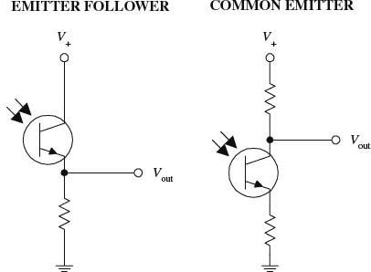
In many ways, a phototransistor is much like an ordinary bipolar transistor. Here, you can see the emitter-follower (current gain, no voltage gain) and the common-emitter amplifier (voltage gain) configurations. The emitter-follower and common-emitter circuits are discussed in Chap. 4.
FIGURE 5.24
5.7.3 Kinds of Phototransistors
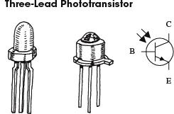
Two-lead phototransistors may not be able to inject enough electrons into the base region to promote a desired collector-to-emitter current. For this reason, a three-lead phototransistor with a base lead may be used. The extra base lead can be fed external current to help boost the number of electrons injected into the base region. In effect, the base current depends on both the light intensity and the supplied base current. With optoelectronic circuits, three-lead phototransistors are often used in place of two-lead devices, provided the base is left untouched.
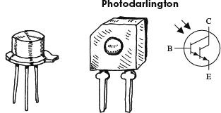
This is similar to a conventional bipolar Darlington transistor but is light-sensitive. Photodarlingtons are much more sensitive to light than ordinary phototransistors, but they tend to have slower response times. These devices may or may not come with a base lead.
FIGURE 5.25
5.7.4 Technical Stuff
Like ordinary transistors, phototransistors have maximum breakdown voltages and current and power dissipation ratings. The collector current IC through a phototransistor depends directly on the input radiation density, the dc current gain of the device, and the external base current (for three-lead phototransistors). When a phototransistor is used to control a collector-to-emitter current, a small amount of leakage current, called the dark current ID, will flow through the device even when the device is kept in the dark. This current is usually insignificant (within the nA range). Table 5.3 presents a portion of a typical data sheet for phototransistors.
TABLE 5.3 Part of a Specifications Table for Phototransistors
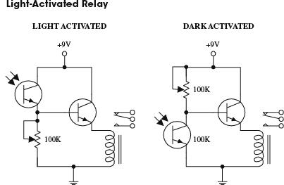
Here, a phototransistor is used to control the base current supplied to a power-switching transistor that is used to supply current to a relay. In the light-activated circuit, when light comes in contact with the phototransistor, the phototransistor turns on, allowing current to pass from the supply into the base of the power-switching transistor. The power-switching transistor then turns on, and current flows through the relay, triggering it to switch states. In the dark-activated circuit, an opposite effect occurs. When light is removed from the phototransistor, the phototransistor turns off, allowing more current to enter the base of the power-switching transistor. The 100-k potentiometers are used to adjust the sensitivity of both devices by controlling current flow through the phototransistor.
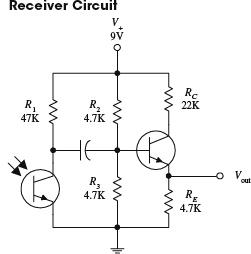
The circuit shown here illustrates how a phototransistor can be used as a modulated lightwave detector with an amplifier section (current gain amplifier). R2 and R3 are used to set the dc operating point of the power-switching transistor, and R1 is used to set the sensitivity of the phototransistor. The capacitor acts to block unwanted dc signals from entering the amplifier section.
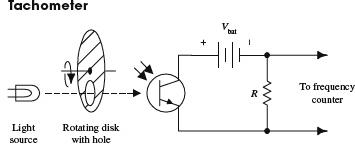
Here is a simple example of how a phototransistor can be used as a simple frequency counter, or tachometer. A rotating disk with a hole (connected to a rotating shaft) will pass light through its hole once every revolution. The light that passes will then trigger the phototransistor into conduction. A frequency counter is used to count the number of electrical pulses generated.
FIGURE 5.26
Photothyristors are light-activated thyristors. Two common photothyristors include the light-activated SCR (LASCR) and the light-activated triac. A LASCR acts like a switch that changes states whenever it is exposed to a pulse of light. Even when the light is removed, the LASCR remains on until the anode and cathode polarities are reversed or the power is removed. A light-active triac is similar to a LASCR but is designed to handle ac currents. The symbol for a LASCR is shown below.
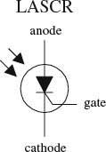
FIGURE 5.27
5.8.1 How LASCRs Work
The equivalent circuit shown here helps explain how a LASCR works. Again, like other p-n junction optoelectronic device, a photon will collide with an electron in the p-semiconductor side, and an electron will be ejected across the p-n junction into the n side. When a number of photons liberate a number of electrons across the junction, a large enough current at the base is generated to turn the transistors on. Even when the photons are eliminated, the LASCR will remain on until the polarities of the anode and cathode are reversed or the power is cut. (This results from the fact that the transistors’ bases are continuously simulated by the main current flowing through the anode and cathode leads.)
FIGURE 5.28
5.8.2 Basic Operation
When no light is present, the LASCR is off; no current will flow through the load. However, when the LASCR is illuminated, it turns on, allowing current to flow through the load. The resistor in this circuit is used to set the triggering level of the LASCR.
FIGURE 5.29
Optoisolators/optocouplers are devices that interconnect two circuits by means of an optical interface. For example, a typical optoisolator may consist of an LED and a phototransistor enclosed in a light-tight container. The LED portion of the optoisolator is connected to the source circuit, whereas the phototransistor portion is connected to the detector circuit. Whenever the LED is supplied current, it emits photons that are detected by the phototransistor. There are many other kinds of source-sensor combinations, such as LED-photodiode, LED-LASCR, and lamp-photoresistor pairs.
In terms of applications, optoisolators are used frequently to provide electrical isolation between two separate circuits. This means that one circuit can be used to control another circuit without undesirable changes in voltage and current that might occur if the two circuits were connected electrically. Isolation couplers typically are enclosed in a dark container, with both source and sensor facing each other. In such an arrangement, the optoisolator is referred to as a closed pair (see Fig. 5.30a). Besides being used for electrical isolation applications, closed pairs are also used for level conversions and solid-state relaying. A slotted coupler/interrupter is a device that contains an open slot between the source and sensor through which a blocker can be placed to interrupt light signals (see Fig. 5.30b). These devices are frequently used for object detection, bounce-free switching, and vibration detection. A reflective pair is another kind of optoisolator configuration that uses a source to emit light and a sensor to detect that light once it has reflected off an object. Reflective pairs are used as object detectors, reflectance monitors, tachometers, and movement detectors (see Fig. 5.30c).
FIGURE 5.30
5.9.1 Integrated Optoisolators
Closed-pair optoisolators usually come in integrated packages. Figure 5.31 shows two sample optoisolator ICs.
FIGURE 5.31
Here, a diode/phototransistor optoisolator is used to provide electrical isolation between the source circuit and the sensor circuit, as well as providing a dc level shift in the output. In the leftmost circuit, the output is noninverted, while the output in the rightmost circuit is inverted.
In optoelectronic applications, the phototransistor section of an optoisolator may not be able to provide enough power-handling capacity to switch large currents. The circuits to the right incorporate a power-switching transistor to solve this problem.
FIGURE 5.32
Optoisolated triacs like the MOC3041 have zero-crossing detection built in so that they turn on only at the zero-crossing point, minimizing current surges. This device can be used to control a regular triac to switch 110 V ac.
FIGURE 5.33
While strictly speaking, optical fibers are “optical” rather than “optoelectrical,” they are often used with photodiodes and LEDs/laser diodes as a medium through which to carry data encoded on beams of light. Figure 5.34 shows how an optical fiber works.
FIGURE 5.34 Optical fiber
The boundary between the two layers, with an outer layer of higher reflective index, ensures that the fiber as a whole acts as a wave guide, with minimal losses of light as it bounces down the fiber. Therefore, optical fibers are much better than wires for transmitting data over long distances. They can also achieve staggering bandwidths, being immune to the induction and capacitive problems associated with wire. As such, they are heavily employed in the telecom industry, especially for high-bandwidth “pipes” between cities and also as submarine cables. It is becoming more and more common for fiber to replace copper in the final mile of telecom connections, actually terminating in homes to provide very high-speed Internet and cable TV.
As Fig. 5.34 implies, light will follow various paths through the fiber, and these paths will be of different lengths, limiting the effective bandwidth. This effect will reduce as the diameter of the internal core reduces. Taken to its limit, a single-mode fiber has a core of between 8 μm and 10.5 μm, and a cladding material diameter of 125 μm. This can be thought of as allowing only the straight-through path of light shown in Fig. 5.34. These fibers can achieve bandwidths in the order of 50 Gb/s over hundreds of miles.
Data are sent using a light source at the sending end (LED or laser diode) and a photodiode or transistor at the other end. Laser diodes are used in telecom systems because the coherent light that they produce travels better, but LEDs are also used in low-cost systems, such as fiber-based audio links in consumer digital audio systems.
Sensors
Sensors are devices that measure a physical property, such as temperature, humidity, stress, and so on. As this is an electronics book, we are concerned with converting such measurements into electrical signals. We have also stretched the definition of a sensor a little to include things such as global positioning systems (GPSs) that locate your position in space.
Many sensors will provide an output signal that is simply a voltage proportional to the property being measured. Others are digital devices that provide digital data about the property. In both cases, these measurements will often be the input to a microcontroller.
6.1 General Principals
Before we look at some of the vast array of sensors that are available, we will cover some of the general principles that underpin all sensing.
6.1.1 Precision, Accuracy, and Resolution
When looking at a sensor, it is important to understand the difference between precision and accuracy, particularly as precision often gives a misleading impression of the accuracy of the sensor. A classic example of this is with digital weighting scales. These may confidently tell you that you weigh 85.7 kilograms when you actually weigh 92.1 kilograms. This is only an error of 10 percent or so, and may not matter if you always use the same scales, but as an absolute measurement, it might be well off the mark.
So precision is a matter of the number of digits reported by the sensor. For an analog sensor, the readings are continuous.
When it comes to digital sensors, there will be a number of bits of resolution. That might be 8 bits (1 in 256), 12 bits (1 in 4096), or higher; that is, the reading is no longer continuous, but has been quantized.
FIGURE 6.1 Sensor types
6.1.2 The Observer Effect
The observer effect states that the act of observing a property changes it. This is the case in a car tire, for example. When you measure the pressure with a conventional tire gauge, you will let a little of the air out, thus changing the pressure that you are measuring. For most sensors, this change will have a negligible effect, but it is something worth keeping at the back of your mind when deciding whether you are getting a true reading.
6.1.3 Calibration
If your invention is a low-cost consumer item that will be mass-produced, then it will be much cheaper and easier to produce if there is no calibration to do. In fact, individual calibration to take differences in individual sensors into account is likely to be prohibitively expensive.
FIGURE 6.2 Sensors
If, on the other hand, your invention is specialized, high-value equipment, then individual calibration of sensors is possible.
The principal of calibration is the same whatever property the sensor measures. The idea is that you take a number of readings from the sensor of unknown accuracy while the sensor is measuring a standard value of known accuracy. So, to calibrate a temperature sensor, your accurate standard might be boiling distilled water at 100°C, or more likely, the temperature in a highly accurate oven constructed for the purpose of calibrating the sensor. This oven will itself need to have been calibrated against an even more accurate standard.
When you have discovered the degree to which your sensor deviates from the standard, then you can compensate for it in some way. Since the sensor will almost certainly be supplying information to a microcontroller, a common way to make the calibration is to change the values in a lookup table. This table contains accurate values against raw values. For example, the raw value straight from a 12-bit analog-to-digital converter is a number between 0 and 1023. These numbers, perhaps in increments of 5, might be the left-hand side of the table, with the right-hand side of the table containing the equivalent temperature as a decimal in degrees Celsius. Interpolation can be used in the gaps between the raw readings by assuming that the small segment of the curve is linear (see Fig. 6.3).
FIGURE 6.3 Actual reading against raw value for a fictional sensor
Some IC sensors are actually calibrated individually during the manufacturing process, with the values for the lookup table being written into the read-only memory (ROM) of the sensor. This allows accurate sensing at low cost.
6.2 Temperature
Temperature sensors are one of the most common types of sensors. Computers and many types of equipment will sense their own temperature to prevent overheating. In addition, as well as electronic thermometers, there are thermostats that keep temperature constant by controlling the power to a load, usually just turning it on and off. Figure 6.4 shows a variety of temperature sensors.
FIGURE 6.4 Temperature sensors
The term “thermistor” is a combination of the words “thermal” and “resistor.” A thermistor is a resistor whose resistance changes markedly with temperature. Thermistors come in two flavors: negative temperature coefficient (NTC) and positive temperature coefficient (PTC). An NTC thermistor’s resistance will decrease with increasing temperature, and a PTC thermistor will behave the opposite way, with the resistance increasing as temperature increases. The NTC is the more common type.
The relationship between temperature and resistance in a thermocouple is not a linear one. Even over relatively short temperature ranges—say 0 to 100°C, a linear approximation will introduce considerable errors (see Fig. 6.5).
FIGURE 6.5 Resistance against temperature for an NTC thermistor
The Steinhart-Hart equation is a third-order approximation used to determine the temperature as a function of the thermistor’s resistance. It works for both NTC and PTC devices. It is normally stated as:
(6.1)
T is the temperature in Kelvin; R is the resistance of the thermistor; and A, B, and C are constants specific to that thermistor. The manufacturer of a thermistor will give all three constant values.
An alternative and more common model for this relationship uses a single parameter (Beta) and assumes constants of T0 and R0, where T0 is usually 25°C and R0 is the resistance of the thermistor at that temperature.
Using this equation, the temperature can be approximated to:
(6.2)
Rearranging this, we can also derive an expression for R:
(6.3)
As well as providing Beta, T0, and R0, the data sheet will also specify a temperature range and accuracy.
To use a thermistor as a thermometer for input to a microcontroller, a voltage is required that can be measured by the analog-to-digital converter of the microcontroller. Figure 6.6 shows a typical arrangement using a potential divider with a fixed-value resistor of the same value as R0.
FIGURE 6.6 Using a thermistor as a thermometer
If we place a NTC thermistor at the top of the potential divider, then as the temperature of the thermistor increases, its resistance falls and Vout rises.
(6.4)
Combining Formula 6.3 with Formula 6.4, we have:
(6.5)
Example 1: Using a potential divider as shown in Fig. 6.3 with a fixed resistor of 4.7 kΩ and an NTC thermistor with a T0 of 25°C, an R0 of 4.7 kΩ, and a Beta of 3977, what is the formula for calculating Vout?
Answer 1: Just substituting the values into the equation, we get:
Note that 273 is added to the temperature in °C to give a temperature in °K.
Example 2: Using the same setup as Example 1, what is Vout at 25°C?
Answer 2: In one way, this is a trick question, since by definition the thermistor’s resistance at 25°C will be 4.7 kΩ, so the voltage will be 2.5 V. However, we can apply the formula as a sanity check:
Example 3: Using the same setup as Examples 1 and 2, what is Vout at 0°C?
Answer 3:
6.2.2 Thermocouples
While thermistors are good for measuring relatively small ranges in temperature—typically –40 to +125°C, for much higher temperatures and temperature ranges, thermocouples are used (see Fig. 6.7).
FIGURE 6.7 Thermocouples
Any conductor subjected to a thermal gradient will experience something called the Seebeck effect; that is, it will generate a small voltage. The magnitude of this voltage is dependent on the type of metal, so if two different metals are joined, the temperature of that junction can be measured by measuring the voltage across the metal leads, at the far end from the junction. It is also necessary to measure the temperature at the other end of the thermocouple leads (often using a thermistor, since this will probably be at room temperature). This second temperature is called the “cold-junction” temperature.
Lookup tables are often used to calculate the absolute temperature at the junction, based on the voltage and the cold-junction temperature, as the relationship is not completely linear and needs a fifth-order polynomial to model it accurately. Manufacturer’s data sheets for thermocouples will normally contain large tables for calculating the temperature.
The most commonly used metals for a thermocouple are the alloys chromel (90 percent nickel and 10 percent chromium) and alumel (95 percent nickel, 2 percent manganese, 2 percent aluminum, and 1 percent silicon). A thermocouple made with these materials will typically be able to measure temperatures over the range –200°C to +1350°C. The sensitivity is 41 μV / °C for these metals.
6.2.3 Resistive Temperature Detectors
Resistive temperature detectors (RTDs) are perhaps the simplest temperature sensors to understand. Like thermistors, RTDs rely on their resistance changing with temperature. However, rather than use a special material that is sensitive to temperature changes (like a thermistor), they simply use a coil of wire (normally platinum) around a glass or ceramic core. The resistance of the core is often contrived to be 100 Ω at 0°C.
RTDs are much less sensitive than thermistors and can therefore be used over a much wider range of temperatures. The resistance of platinum changes in a relatively linear manner, and can be assumed to be linear for a range of 100°C or so. For the range 0 to 100°C, the resistance of a platinum RTD will vary by 0.003925 Ω/Ω/°C.
So, a 100 Ω (at 0°C) platinum RTD will, at a temperature of 100°C, have a resistance of:
100Ω + 100°C × 100 Ω × 0.003925 Ω/Ω/°C = 139.25 Ω
The first 100 Ω in the equation above is for the base resistance of the RTD at 0°C.
This can be arranged in a potential divider in the same way as a thermistor.
6.2.4 Analog Output Thermometer ICs
An alternative to using a thermistor and fixed-value resistor in a potential divider arrangement is to use a special-purpose temperature measurement IC.
Devices such as the TMP36 come in a three-pin package and are used as shown in Fig. 6.8.
FIGURE 6.8 TMP36 temperature sensor
Unlike a thermistor, the sensor’s output voltage is almost linear at 10 mV / °C for a temperature range of –40 to +125°C. The accuracy is only ±2°C over the temperature range.
The temperature in °C is simply calculated from Vout using the formula:
T = 100Vout – 50
The constant 50 is specified in the data sheet for the TMP36.
These devices are considerably more expensive than thermistors and series resistors, but they are very easy and convenient to use.
6.2.5 Digital Thermometer ICs
An even higher technology approach to temperature measurement is to use a digital thermometer IC. These devices have a serial interface for use by microcontrollers.
A typical digital thermometer IC is the DS18B20. It uses a serial bus standard called 1-Wire that can allow multiple sensors to share the same data line (see Fig. 6.9).
FIGURE 6.9 DS18B20 temperature sensor IC
These devices are more accurate than the linear devices such as the TMP36. The digital thermometer IC has a stated accuracy of ±0.5°C and a temperature range of –55°C to +125°C.
Since digital thermometer ICs transmit their data digitally, they are very suitable for remote sensing, as lead length and electrical interference will have less effect than with an analog device. In fact, they will either work accurately or not at all in an electrically noisy environment.
Digital thermometer ICs can also be configured to work in “parasitic” power mode, where they harvest power from the data line, allowing them to be connected with just two wires. The GND and positive supply to the DS18B20 are both grounded, and the microcontroller must control a MOSFET transistor that pulls the data line up to the supply voltage under strict timing conditions.
Chapter 13 contains more information about using the 1-Wire interface with microcontrollers.
6.2.6 Infrared Thermometers/Pyrometers
If you have been to the doctor recently and have had your temperature taken, you will probably have seen an infrared thermometer that is placed near your ear and measures the temperature just on the inside surface of the ear without any actual contact. The ear is chosen because it is effectively a hole into the body that is free from the influence of external radiation, so that the back surface of the ear acts as a “black-body” radiator.
Pyrometers, or more specifically, broadband pyrometers, measure the radiation intensity, which has dimensions of energy per second per unit of area and use the Stefan-Boltzmann law to determine the temperature:
j* = σT4
The radiation intensity (j*) is proportional to the fourth power of the temperature, where σ is the Stefan-Boltzmann constant (5.6704 × 10–8
Js–1m–2K–4).
These devices use an infrared sensor such as the MLX90614 coupled with optics that focus the infrared radiation from the subject onto the sensor. When used for other measurement applications, the infrared thermometer will often have a low-power laser align with the sensor so that it can be aimed to take spot readings of temperature.
Devices such as the MLX90614 are more than just a sensor, containing a low-noise amplifier, high-precision analog-to-digital converter, and all the associated electronics to produce a digital output.
As with other IC sensors, the advantages of including all the electronics in the same package as the sensor itself are the reduction of noise and simplicity of interfacing.
Other sensors are available for high temperatures, such as those found in industrial furnaces, and the term “pyrometer,” with its overtones of fire, is usually reserved for such high-temperature applications.
6.2.7 Summary
Table 6.1 shows a number of temperature sensors and their characteristics.
TABLE 6.1 Temperature Sensors
The figures for accuracy in Table 6.1 are somewhat arbitrary, as for most sensors, high accuracy can be obtained by individual calibration. It is also the accuracy of the overall system—including the electronics that use the sensor value—that counts. The figures assume the use of off-the-shelf components using data sheet parameters without any individual calibration and are meant as an indication of the likely accuracy of measurement that can be achieved with such a sensor.
6.3 Proximity and Touch
This section deals with detecting objects or measuring their distance from the sensor. Figure 6.10 shows a selection of such sensors
FIGURE 6.10 Proximity and touch sensors
6.3.1 Touch Screens
Touch screens are commonly used in cellular phones and tablet computers. There are many different technologies used in touch screens. The most commonly used are resistive touch screens.
Resistive touch screens are one of the older and more readily used touch screen technologies. They rely on a transparent sheet on top of the display. This sheet is flexible and also conductive. Figure 6.11 shows a typical arrangement for a four-wire resistive touch screen.
FIGURE 6.11 Resistive touch screen
Both the top and bottom surfaces are coated with a conductive layer. Insulating dots are evenly sprayed onto the rigid bottom surface to keep the layers apart, except when they are pressed together.
To determine the X position of a touch, A is set to 0 V and B to 5 V, establishing a voltage gradient across the top surface. The voltage measured at C, or for that matter D, will be proportional to the X position. This is converted into coordinates using an analog-to-digital converter.
The conductive layer acts just like a potentiometer with C as the slider. If the device measuring the voltage at C has a very high input impedance, then the resistance of the track from the surface to the terminal C can be ignored. Most microcontrollers will have an analog-to-digital converter with a high input resistance, typically several MΩ. So, the voltage at C will be between 0 and 5 V in direct proportion to the distance from A of the touch.
When it comes to reading the Y position, some crafty footwork has to take place. Now C will be set to 0V, D to 5V, and the voltage measured at A or B.
All this processing will be carried out by either a special-purpose controller chip or a microcontroller.
6.3.2 Ultrasonic Distance
Ultrasonic distance-measuring devices are much loved by the developers of hobby robots. They are also found in commercial equivalents to the tape measure.
These devices send out a pulse of ultrasound and time how long it takes for the reflection to come back. A simple calculation involving the speed of sound will determine the distance to the object (see Fig. 6.12).
FIGURE 6.12 Ultrasonic distance measurement
These devices have a measurement range of up to around 5 meters (15 ft), but this depends very much on the size and sound reflecting properties of the object. They also suffer limits of accuracy due to variations in the speed of sound, which is dependent on many factors, including atmospheric pressure, humidity, and temperature. For example, at 0°C, the speed of sound in dry air is 331 meters/seconds, but this rises to 346 meters/second at 25°C—a difference of 4.5 percent.
Sometimes separate transducers are used for sending and receiving the pulses of ultrasound, and sometimes a single transducer is used in both roles.